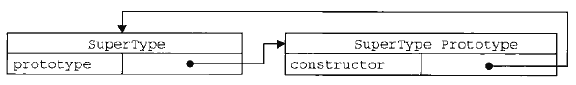
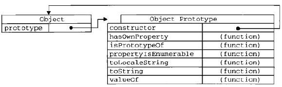
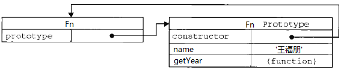

prototype原型
既typeof之后的另一位老朋友！
prototype也是我们的老朋友，即使不了解的人，也应该都听过它的大名。如果它还是您的新朋友，我估计您也是javascript的新朋友。
在咱们的第一节一切都是对象中说道，函数也是一种对象。他也是属性的集合，你也可以对函数进行自定义属性。
不用等咱们去试验，javascript自己就先做了表率，人家就默认的给函数一个属性——prototype。对，每个函数都有一个属性叫做prototype。
这个prototype的属性值是一个对象（属性的集合，再次强调！），默认的只有一个叫做constructor的属性，指向这个函数本身。

如上图，SuperType是是一个函数，右侧的方框就是它的原型。
原型既然作为对象，属性的集合，不可能就只弄个constructor来玩玩，肯定可以自定义的增加许多属性。例如这位Object大哥，人家的prototype里面，就有好几个其他属性。

咦，有些方法怎么似曾相似？
对！别着急，之后会让你知道他们为何似曾相识。
接着往下说，你也可以在自己自定义的方法的prototype中新增自己的属性
function Fn() { }
Fn.prototype.name = '王福朋';
Fn.prototype.getYear = function () {
return 1988;
};
看到没有，这样就变成了

没问题！
但是，这样做有何用呢？ —— 解决这个问题，咱们还是先说说jQuery吧。
var $div = $('div');
$div.attr('myName', '王福朋');
以上代码中，$('div')返回的是一个对象，对象——被函数创建的。假设创建这一对象的函数是 myjQuery。它其实是这样实现的。
myjQuery.prototype.attr = function () {
//……
};
$('div') = new myjQuery();
不知道大家有没有看明白。
如果用咱们自己的代码来演示，就是这样
function Fn() { }
Fn.prototype.name = '王福朋';
Fn.prototype.getYear = function () {
return 1988;
};
var fn = new Fn();
console.log(fn.name);
console.log(fn.getYear());
即，Fn是一个函数，fn对象是从Fn函数new出来的，这样fn对象就可以调用Fn.prototype中的属性。
因为每个对象都有一个隐藏的属性——“proto”，这个属性引用了创建这个对象的函数的prototype。即：fn.proto === Fn.prototype
这里的"proto"成为“隐式原型”，下回继续分解。